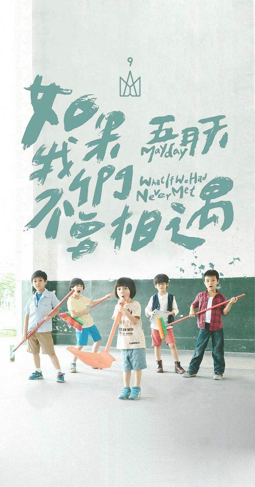

五月天
五月天，中国台湾摇滚乐团，由温尚翊（怪兽）、陈信宏（阿信）、石锦航（石头）、蔡升晏（玛莎）、刘谚明（冠佑）组成。
乐团前身为“So Band”乐团，在1997年3月29日更名为“五月天”。乐团至2016年，四次拿下"台湾金曲奖"和“最佳乐团奖”。
1999年，发行首张专辑《第一张创作专辑》。
2000年7月7日，发行了第二张创作专辑《爱情万岁》。2001年7月6日，推出暂别歌坛之作第三张创作专辑《人生海海》。2003年11月11日，发行第四张专辑《时光机》。2004年11月5日，推出第五张专辑《神的孩子都在跳舞》。2005年8月，推出精选辑《知足Just
My
Pride最真杰作选》。2006年12月29日，发行第六张专辑《为爱而生》。2008年10月23日，发行第七张专辑《后青春期的诗》。2011年12月16日，发行第八张专辑《第二人生》。2016年7月21日，发行第九张专辑《自传》。

中文名 五月天 主要成就 全球华语音乐榜中榜最佳乐团
外文名 Mayday 华语乐坛最受欢迎乐团奖
国 籍 中国 HITO流行音乐奖最受欢迎乐团
民 族 汉族 KKBOX数位音乐榜最佳团体
出生地 中国台湾台北 《第二人生》十白金唱片认证
职 业 乐团，词曲创作人 四次台湾金曲奖“最佳乐团奖”
经纪公司 相信音乐 新加坡金曲奖最佳乐团
代表作品志明与春娇、拥抱、 港台地区最佳乐团奖
温柔、憨人、倔强、知足、 MR中国TOP排行榜最佳乐团
突然好想你、我不愿让你一个人、 中歌榜最受欢迎乐团
后来的我们成立时间 : 1997年3月29日
成员人数 5人